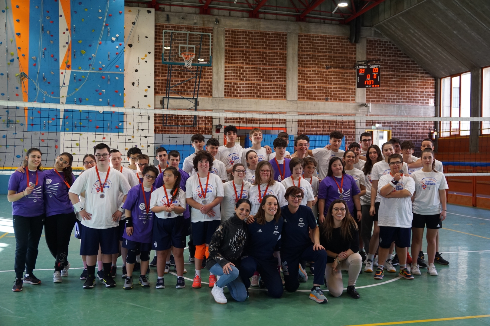

🏆 Esperienza Sportiva
Special
Team
Un'esperienza di volontariato e supporto sportivo dedicata all'inclusione, dove il gioco di squadra diventa uno strumento per superare ogni barriera.

volunteer_activism Descrizione Attività
Durante questa esperienza ho affiancato gli atleti nelle sessioni di allenamento e durante le competizioni. Mi sono occupata dell'incoraggiamento costante, dell'organizzazione dei materiali e del supporto tecnico ai coach, vivendo momenti di grande emozione e crescita personale.
location_on
Sede
Volley Bergamo 1991
event_available
Periodo
Anno scolastico 2023/2024
Skills Acquisite
- diversity_1 Empatia
- support_agent Supporto
- sports_handball Coaching
stars
Ogni limite è una sfida